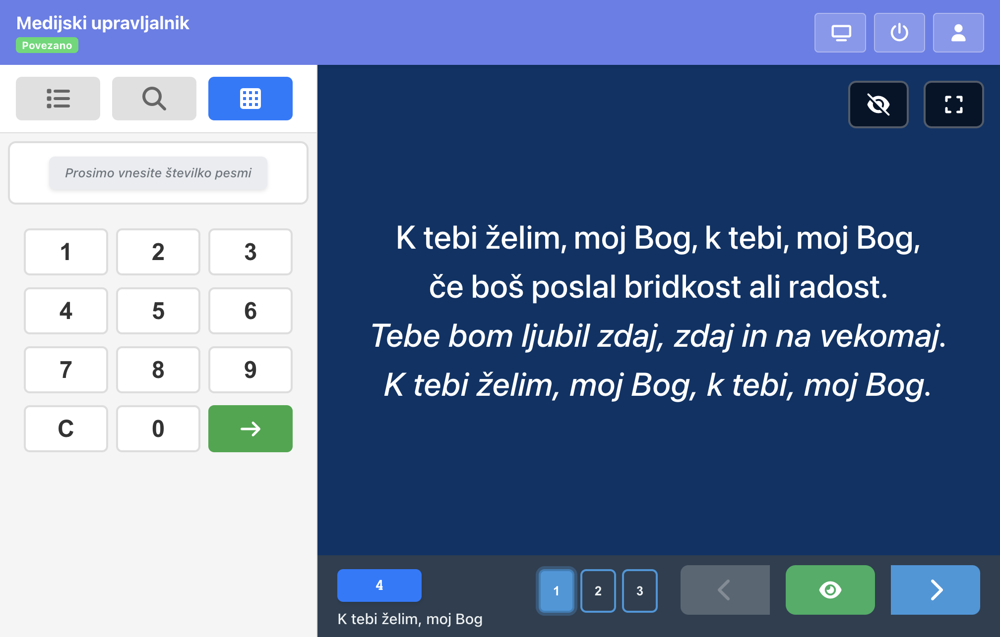
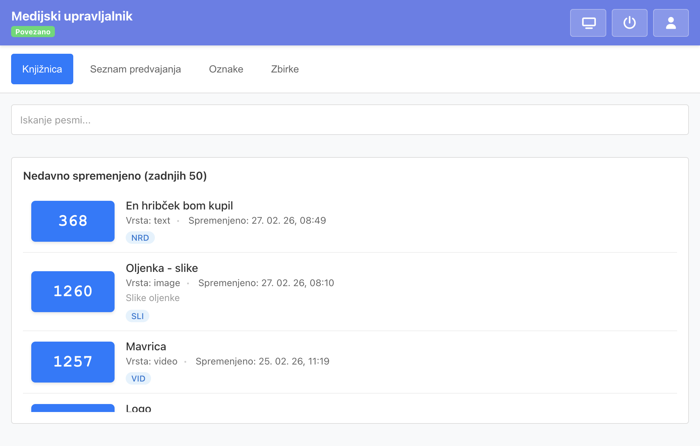
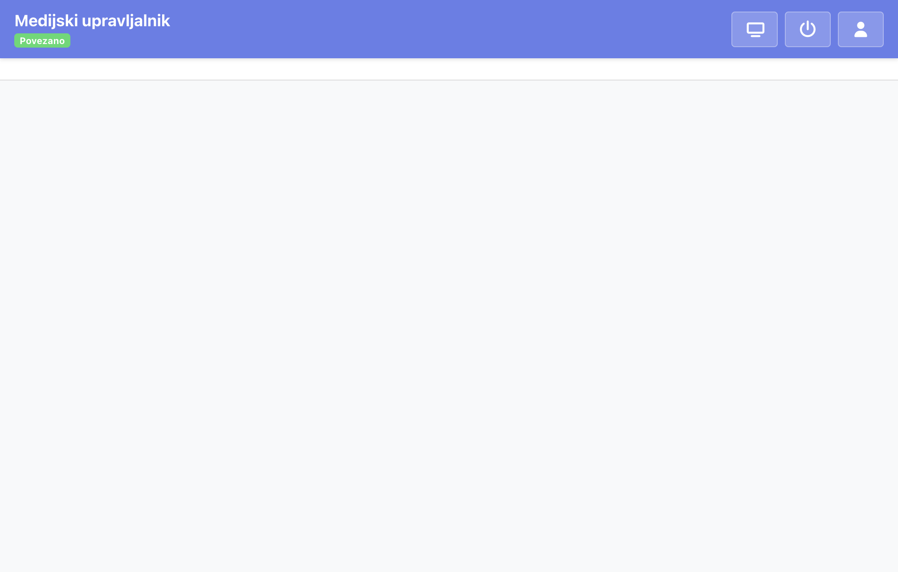
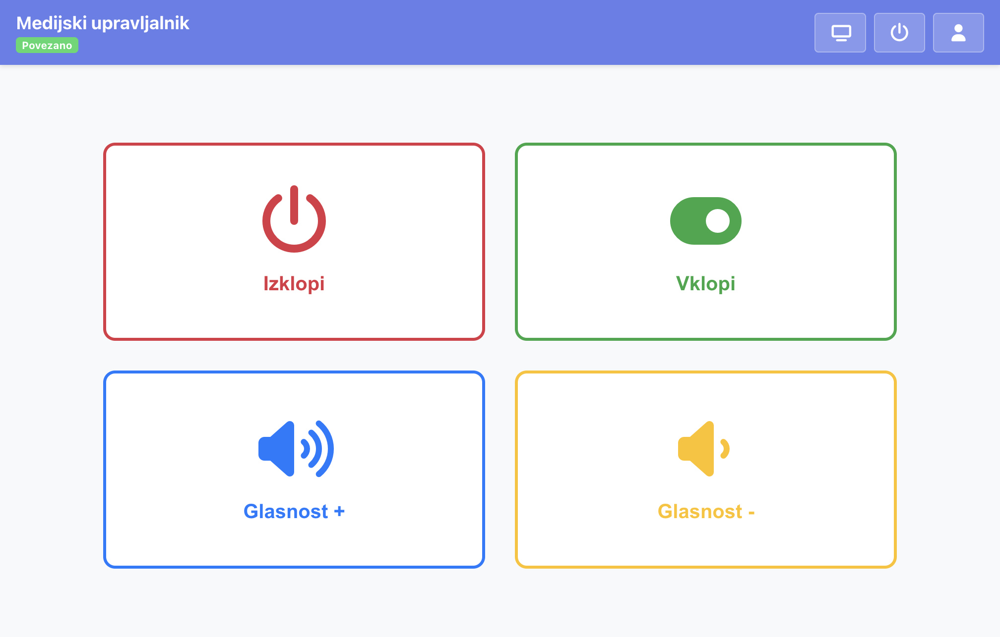
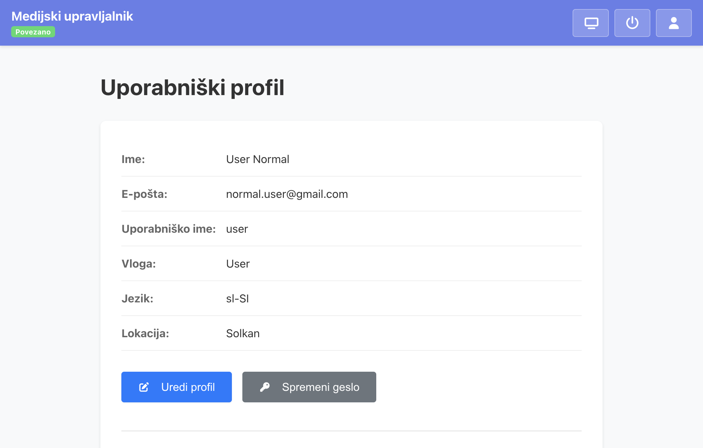

docs/screenshots/ in posodobite ustrezne vrstice v tem dokumentu.
Različica dokumentacije: Januar 2026
MediaPlayer Admin je spletna aplikacija za upravljanje sistema MediaPlayer. Omogoča:
Aplikacija podpira angleščino, slovenščino in italijanščino. Jezika lahko spremenite v uporabniškem profilu.
Za dostop do aplikacije se morate prijaviti z uporabniškim imenom in geslom. Ob prijavi izberite tudi lokacijo – to določa, na kateri zaslon ali skupino zaslonov boste upravljali vsebino. Priporočljivo je, da administratorji izberejo ustrezno lokacijo glede na prostor, kjer delajo.
Po prijavi se prikaže glavna vrstica z gumbi:
Levo od gumbov je prikazana povezanost s strežnikom (povezano / povezovanje / ni povezano). Če povezava izgine, uporabite gumb »Osveži«.

Projekcija je glavni operativni pogled. Na levi strani je stranski panel s tremi zavihki:
Izberete seznam predvajanja (npr. »Nedeljska maša«) in nato kliknete pesem ali vsebino. Če ima pesem več strani, lahko izberete tudi konkretno stran. Za večstranične pesmi so na vrhu prikazane gumbi za izbiro strani.
Polnobesedilno iskanje po knjižnici z naprednimi filtri (zbirka, oznake). Ko ne iščete, so prikazane nedavno izbrane postavke (zadnjih 20). Iskanje omogoča hitro iskanje pesmi po imenu ali vsebini.
Vnesete številko postavke (GUID) neposredno prek številčnice. Uporabno, če poznate številko pesmi. Pod številčnico so prikazane nedavno izbrane postavke za hiter dostop.
V sredini se prikazuje v živo, kaj vidi občinstvo na zaslonu. Na voljo so:
Puščične tipke levo/desno (ali gor/dol) premikajo med stranmi. Tipka Enter potrdi izbiro. Tipka Escape skrije vsebino z zaslona.
V zavihku »Knjižnica« urejate posamezne postavke (pesmi, slike, videoposnetke itd.).
Za vsako postavko lahko dodate več strani. Strani lahko preuredite z vlečenjem in spuščanjem. Vsaka stran ima lahko svojo vrsto vsebine (npr. prva stran besedilo, druga slika).
Za postavko in posamezne strani lahko nastavite trajanje v sekundah. Če je trajanje nastavljeno, se v projekciji prikaže gumb za avtopredvajanje – ob aktivaciji se strani avtomatsko preklapljajo. Pustite prazno za ročno preklapljanje.
Za vsako postavko lahko nastavite barvo ozadja, barvo pisave in barvo akordov. Možna je tudi lastna CSS (npr. velikost pisave, odmiki).
Postavkam lahko dodelite oznake za kategorizacijo. Zbirke združujejo postavke po letu, založbi ali viru.

V zavihku »Seznam predvajanja« ustvarjate in urejate sezname. Izberete ime, poizvedovanje po knjižnici (z možnimi filtri po zbirki in oznakah) ter dodajate postavke. Za vsako postavko lahko izberete, katere strani vključiti (privzeto vse). Vrstni red postavk lahko spremenite z vlečenjem in spuščanjem.
Zbirke organizirajo knjižnične postavke po letu, založbi ali viru. Vsaka zbirka ima naslov, letnico in opcijske podatke (založnik, vir). Postavke iz zbirk so pri iskanju v urejevalniku seznamov dostopne prek filtra.
Oznake so kategorije, ki jih dodelite postavkam (npr. »Božične«, »Slovenske«). Omogočajo hitro filtriranje pri iskanju in pri urejanju seznamov.
V nastavitvah upravljate sistem. Potrebna so ustrezna dovoljenja.
Dodajanje, urejanje in brisanje uporabnikov. Vsak uporabnik ima vlogo, e-pošto in izbiro jezika (slovenščina, angleščina, italijanščina).
Vloge določajo, kaj sme uporabnik (npr. PogledProjekcija, PogledUrejevalnik, PogledNastavitve, UrejanjeKnjižnice). Dovoljenja dodelite posameznim vlogam.
Lokacije predstavljajo zaslone ali skupine zaslonov. Ob prijavi uporabnik izbere lokacijo; vsebina, ki jo izbere, se prikaže na zaslonih te lokacije.

Pogled »TV daljinec« omogoča vklop in izklop zaslona ter regulacijo glasnosti prek HDMI CEC. Za delovanje mora biti na strežniku nameščen cec-client (paket cec-utils). Gumbi so prevedeni v izbranem jeziku.

V profilu lahko spremenite svoje ime, e-pošto in geslo. Pomembna je izbira jezika – vpliva na vse besedilo v aplikaciji (slovenščina, angleščina, italijanščina).

Pomembno: Za tehnično pomoč ali vprašanja obrnite na skrbnika sistema.
© 2026 MediaPlayer Admin. Aplikacijo je mogoče prosto uporabljati v nekomercialne namene.